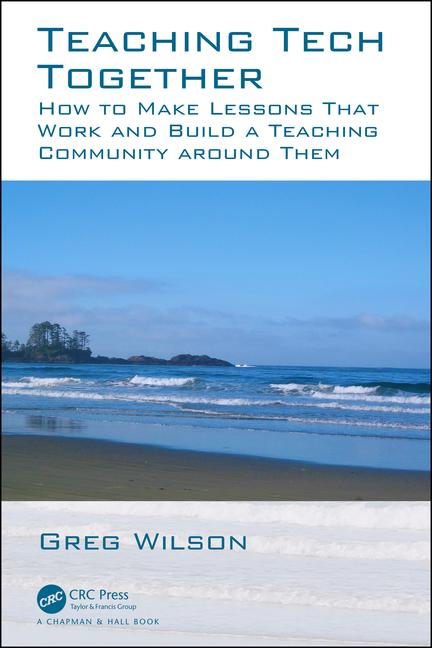

Teaching Tech Together

This introduction to evidence-based teaching practices was published by Taylor & Francis in 2019, and is presently being revised and updated.
The one-day workshop based on the book introduces key evidence-based techniques that can help you create and deliver effective training, bring new team members up to speed more quickly, provide better technical support, and get the most out of your own learning. Topics include:
- creating learner personas
- why novices, competent practitioners, and experts need different lessons
- managing cognitive load
- formative and summative assessment
- what motivates and demotivates learners
- teaching as a performance art
The workshop has been taught over 50 times since 2017 for companies, public libraries, and open source organizations, and the materials are available online under an open license. If you would like to know more, please check out out this one-minute video or email the author.
Dr. Greg Wilson is a programmer, author, and educator based in Toronto. He co-founded and and was the first Executive Director of Software Carpentry, which has taught basic software skills to tens of thousands of researchers in over 65 countries. Greg is the author of several books, a member of the Python Software Foundation, and a recipient of ACM SIGSOFT’s Influential Educator of the Year award.
0.1 FAQ
- What is the format of the workshop?
- It can be one full day or two half-days (preferably on consecutive days). The latter works better: people are less tired for the second half and it gives them time to deal with anything else that might come up. No special equipment is required.
- Is the workshop online or in person?
- Some parts are more effective (and more fun) in person, but it works well online and is often easier to coordinate that way, particularly for distributed organizations. Online offerings also don’t incur travel costs.
- How large can a workshop be?
- Up to 20 people; any more than that, and people become observers rather than participants.
- How much does this cost?
- The cost depends on the nature of the organization and on whether the host is willing to make a donation to a charity such as Rainbow Railroad or the Red Door Family Shelter in lieu of part of the fee. Please get in touch to discuss specifics.
- Who is the intended audience?
- Participants at past workshops have included programmers, product managers, designers, data scientists, support staff, and others. The material does not assume any prior training in teaching.
- Who can take part?
- That’s up to whoever is organizing or hosting the workshop. Most workshops have been for the staff at specific companies, but some companies have sponsored workshops for members of open source or other volunteer communities.
- Where does the material come from?
- The workshop is a shortened and updated version of material originally developed for the Carpentries’ instructor training program and RStudio’s instructor certification program.